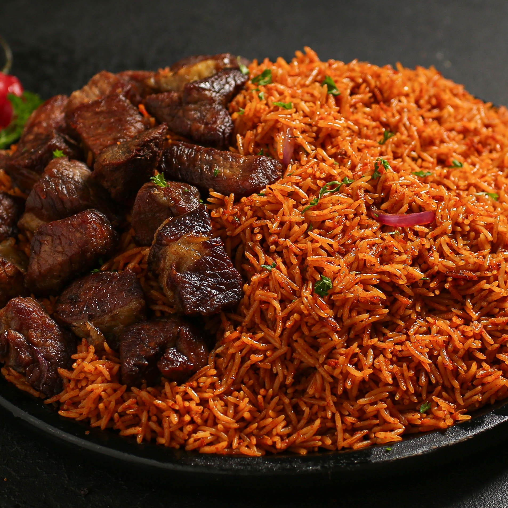

Jollof Rice

Ingredients
- 2 cups rice
- 3 tomatoes
- 1 onion
- 3 tablespoons oil
Method
- Blend the tomatoes and onion.
- Fry the mixture in oil for 10 minutes.
- Add the rice and water.
- Cover and cook until the rice is soft.
Details
| Preparation time | 15 minutes |
|---|---|
| Cooking time | 40 minutes |
| Servings | 4 |